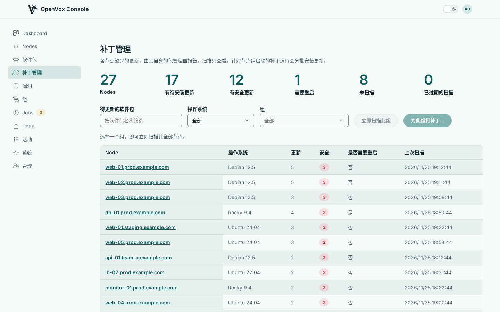

扫描 Linux Nodes 所缺少的更新，并分批应用，在有问题的更新波及整个机群之前就能及时停止。
待安装的更新，以每个 Node 的包管理器所报告的为准
扫描会让 Node 的代理以不做任何更改的模式运行 apt、dnf 或 yum，然后显示每个待安装更新的已安装版本和可用版本，以及包管理器是否将其视为安全更新。Node 还会说明它是否已经需要重启。
扫描按你掌控的计划运行，也可以针对单个 Node 或整个组按需运行。无法扫描的 Node 会被列为无法上报——绝不会显示为已完全打好补丁。


分批打补丁，并带有安全停止机制
选择安全更新、全部更新或指定的软件包，以及同时为多少个 Nodes 打补丁。设置多少次失败后结束本次运行，这样一旦出了问题，就不会再启动后续批次。用不安装任何东西的试运行先行预览，并让需要重启的 Nodes 在完成后重启。
进度按 Node 逐个显示；中途失去响应的 Node 会被如实报告，而不会无限期挂起；完成之后会再次扫描该 Node，使页面显示真正剩余的内容。
Windows、macOS 和 zypper（SUSE）Nodes 不会被扫描。它们会被列为无法上报，因此覆盖上的缺口一目了然，而不会被误认为一切正常。
动手操作
扫描 Linux Nodes 上待安装的软件包更新，然后分批为它们打补丁，支持试运行、停止阈值和可选的重启。
OpenVox Console 以容器镜像形式发布，每次 push 都会构建 amd64 和 arm64 版本，同时也提供单个二进制文件。安装指南将带你从一台空主机走到一套可用的部署——openvoxserver、openvoxdb、Postgres 和控制台——可以用容器，也可以用软件包。